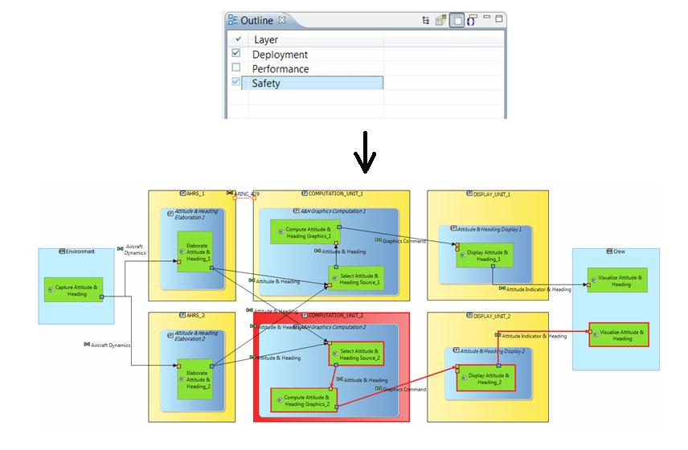
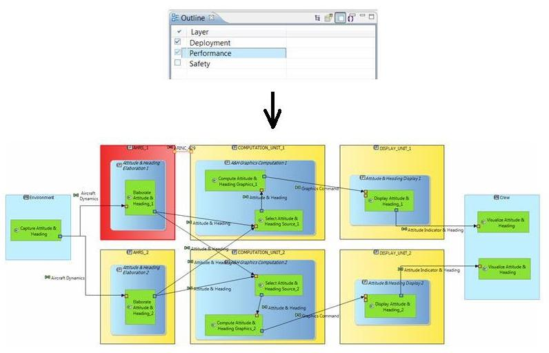
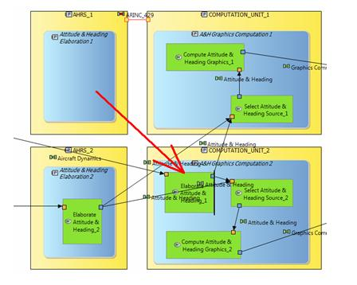
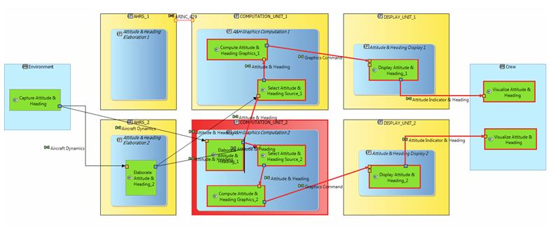

|
Note: No Viewpoint is provided included by default in Capella package.
Basic demo viewpoints are available on-demand. It is up to each programme / unit to
design the viewpoints suiting their domain. EPM's role is
- to provide support for developing extensions on top of Capella,
- to help capitalizing and distributing viewpoints developed by customizers in
units,
- to develop specific viewpoints on-demand (work on quotation)
|
Principles
Multi-viewpoints approach enables to emphasize/filter and/or automatically check models
according to particular concerns (e.g. Safety, Performance, Interfaces...). This approach
helps identifying the best architectural compromises to identify the optimal architecture that
best meets requirements and constraints. Each viewpoint must be specified and
implemented as a Capella extension (for example as a meta-model extension to add
specific concepts, diagrams definitions, rules definitions and implementation).
Viewpoints can extend basic Capella engineering approaches (both Use Case and
Functional Analysis). This mechanism can provide additional concepts & tools
(edition, analysis) for Non Functional Analysis: safety, dependability / fault tolerance,
certification; time-critical functional paths; performances & required hardware resources;
mapping on existing hardware, middleware, reference architecture; functional grouping
consistency; complexity of internal interfaces; human factors; dependency in system
integration; security; ease of sub-contracting; reuse, existing legacy, product line policy,
modularity, ability to evolve, available technologies, COTS, weight; etc. It can also provide
additional concepts & tools for multi-criteria analysis (for early validation).
The Viewpoint mechanism can also be used for basic concepts and tools specialisation:
physical architecture specialisation (physical component characterisation), alternate
rendering of the same model, adaptation for allowing bridging to another engineering
domain/environment, generic viewpoint specialisation, etc.
Illustration
The following illustrates the use of two very basic Safety and Performance viewpoints (based
on PropertyValues) in Capella.
Activation
of Safety Viewpoint
The Safety annotations on the components are analyzed and the Physical Architecture diagram is
updated accordingly. The updated diagram shows that one of the final Functions "Visualize
Attitude & Heading" is not performed anymore.

Activation
of Performance Viewpoint

As the "AHRS_1" capacity is not sufficient for satisfying "Elaborate Attitude & heading_A"
constraints, it appears in red. One option is to move this function to another more powerful
component. No Performance issue is detected anymore.

Re-activation
of Safety Viewpoint
The change performed for satisfying performance constraints has an impact on Safety.
Compromises have to be found by System Engineers.
